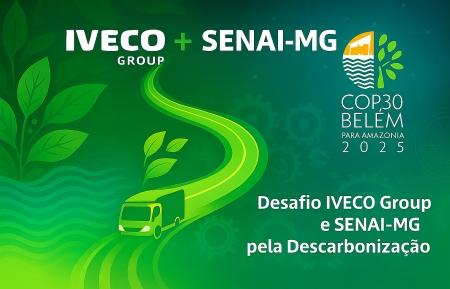

☀︎
☾

Dashboard de Rastreabilidade
Conheça a jornada de um material sustentável em nossa cadeia de suprimentos.
Rastrear Lote de Alumínio
Rastrear Lote de Aço Reciclado
Rastrear Lote de Plástico Reuso
Pegada de Carbono Total do Lote
← Voltar para a Tela Inicial